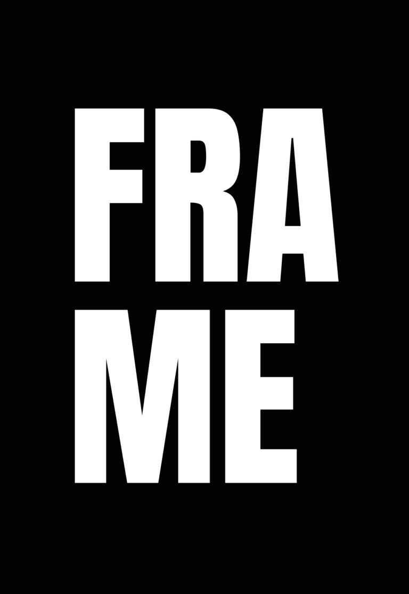
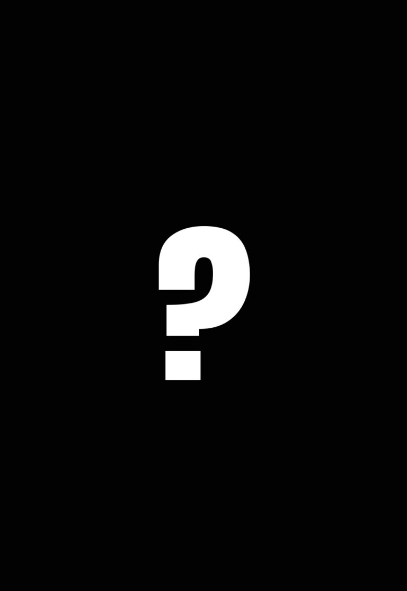

Service
Maßgeschneiderte Services – entwickelt, um Ihre Marke auf das nächste Level zu heben.
Brand
Strategie
Markenfindung & Zielgruppenanalyse
Bevor man sich in Farben, Schriften und schönen Logos verliert, muss man erst mal eins tun: genau hinschauen. Wer sind Sie? Was wollen Sie? Wer soll Sie sehen – und warum?
Ich grabe mich rein: in Ihr Unternehmen, Ihre Zielgruppe, den Markt, die Konkurrenz. Nicht mit Bauchgefühl, sondern mit klarem Blick und klugen Fragen.
Erst wenn ich das alles weiß, fange ich an, etwas zu bauen, das trägt. Keine Spielerei. Sondern eine Marke, die zu Ihnen passt – und bleibt.
Logo & Erscheinungsbild
Ein Logo ist kein hübsches Bildchen. Es ist ein Zeichen. Für das, was Sie sind, was Sie zeigen, was Sie versprechen.
Wir entwickeln Logos, die nicht erklären, sondern erzählen. Und dazu ein Erscheinungsbild, das zusammenhält, was zusammengehört: Farben, Schriften, Formen.
So entsteht Wiedererkennung. Nicht weil’s laut ist, sondern weil’s stimmt. Und bleibt.
Markenbotschaft & Positionierung
Was sagen Sie – und wie? Das entscheidet, ob Menschen Ihnen zuhören oder weiterscrollen.
Wir helfen Ihnen, den richtigen Ton zu finden. Nicht gekünstelt, nicht aufgesetzt, sondern so, wie Sie wirklich sind.
Mit einer klaren Botschaft, die zeigt, was Sie besonders macht – und mit Worten, die bei den Richtigen ankommen.
Denn wer verstanden wird, wird erinnert. Und wer erinnert wird, wird gewählt. Ganz einfach.
Markenrichtlinien
Eine Marke wirkt nur, wenn sie zusammenhält.
Deshalb schreiben wir auf, wie sie aussieht, klingt und sich anfühlt: Logo, Farben, Schriften, Bilder, Tonfall – alles an einem Ort, für alle verständlich.
So bleibt Ihre Marke, was sie ist: wiedererkennbar, verlässlich, unverwechselbar. Egal, wer gerade damit arbeitet.
Website
Design
Individuelles Webdesign
Keine Standard-Websites, sondern digitale Markenerlebnisse.
Ich gestalte Seiten, die nicht von der Stange kommen, sondern zu Ihrer Marke passen wie ein guter Anzug. Klar in der Struktur, intuitiv in der Bedienung, stark im Auftritt. Damit Besucher bleiben, sich zurechtfinden – und am Ende genau das tun, was Sie sich wünschen.
Website-Analyse, Audit & Redesigns
Sie wollen wissen, wie Ihre Website aktuell performt?
Ob schnelle Ersteinschätzung oder umfassender Report – ich analysiere, wo es hakt, wo Potenzial schlummert und wie Ihre Seite stärker wirken kann. UX, Design, Technik, SEO – alles im Blick.
Quick-Check – kostenlos & unverbindlich
In 5 Minuten erfahren Sie, wo Ihre Website steht. Klarer Überblick – ohne Aufwand.
Audit Pro (ab 850 €)
Detaillierte Analyse + PDF-Report mit konkreten Empfehlungen zu UX, SEO, Technik und Markenwirkung. Optional mit Fokus auf einzelne Bereiche.
WordPress & Webflow Entwicklung
Mit WordPress (Kadence) und Webflow entwickle ich Websites, die nicht nur gut aussehen, sondern sich auch leicht aktualisieren lassen.
Ob Blog, Portfolio oder Unternehmensseite – ich baue individuelle Layouts, die zu Ihrer Marke passen und leicht zu pflegen sind. Dank bewährter Plugins, sauberem Code und responsivem Design läuft Ihre Seite rund – auf jedem Gerät, bei jedem Besuch.
Website-Pflege & Support
Ich halte Ihnen den Rücken frei – mit regelmäßiger Pflege und technischem Support für Ihre Website.
Updates, Backups, Sicherheitschecks – ich kümmere mich darum, dass alles läuft, während Sie sich auf Ihr Business konzentrieren.
So bleibt Ihre Seite stabil, schnell und sicher. Jeden Tag.

UI/UX
Design
User Research & Persona-Entwicklung
Bevor gestaltet wird, höre ich zu.
Ich werte Daten aus und lerne: Wer sind Ihre Nutzer? Was brauchen sie wirklich?
Daraus entstehen Personas – greifbare, ehrliche Abbilder Ihrer Zielgruppe.
Sie helfen uns, Entscheidungen zu treffen, die nicht aus dem Bauch kommen, sondern aus dem Leben. Für Lösungen, die passen – wirklich passen.
Wireframing & Prototyping
Erst recherchieren und denken, dann designen.
Mit Skizzen, Klickdummys und Prototypen machen wir Ideen sichtbar – lange bevor programmiert wird.
So teste ich, wie sich etwas anfühlt, ob es Sinn ergibt, wo man hängen bleibt. Und ändere, was nicht passt.
Das spart Zeit, Geld – und Nerven. Vor allem aber führt es zu Lösungen, die wirklich durchdacht sind.
Usability Testing & Analyse
Ich schaue zu, wenn Menschen klicken, wischen, scheitern – oder lächeln.
Mit Usability-Tests finden wir heraus, was funktioniert und was nicht.
Keine Vermutungen, sondern echte Nutzer, echtes Verhalten, echte Erkenntnisse.
Das Ergebnis? Weniger Frust, mehr Flow – und ein Produkt, das sich richtig anfühlt.
UI/UX Audits & Redesigns
Manchmal braucht eine gute Idee einfach frischen Wind.
Ich durchleuchte Ihr bestehendes Design auf Herz und Nutzerverstand: Wo hakt’s? Wo fehlen Klarheit, Struktur oder Gefühl?
Mit einem geschulten Blick und ehrlichem Feedback starten wir den Feinschliff – oder den Neustart. Für eine digitale Erfahrung, die nicht nur besser aussieht, sondern sich auch besser anfühlt.
Quick-Check – kostenlos & unverbindlich
In 5 Minuten erfahren Sie, wo Ihr digitales Produkt steht. Klarer Überblick – ohne Aufwand.
Audit Pro (ab 1.500 €)
Detaillierte Analyse + PDF-Report mit konkreten Empfehlungen zu UX, SEO, Technik und Markenwirkung. Optional mit Fokus auf einzelne Bereiche.
KI &
Digitalisierung
KI-Einführung im Unternehmen
KI ist kein Selbstzweck. Ich schaue mir an, wo in Ihrem Alltag Zeit verloren geht – und wo KI-Werkzeuge wirklich entlasten: bei Texten, Recherche, Angeboten oder internen Abläufen.
Gemeinsam wählen wir passende Tools aus und führen sie so ein, dass Ihr Team sie gern nutzt – mit Blick auf den Datenschutz.
Digitale Prozesse
Vom Zettelstapel zum klaren Ablauf: Ich helfe Ihnen, wiederkehrende Aufgaben zu digitalisieren und sinnvoll zu verknüpfen – Schritt für Schritt, auch ohne eigene IT-Abteilung.
Schulung & Begleitung
Ich zeige Ihnen und Ihrem Team, wie Sie KI sicher und sinnvoll einsetzen – praxisnah, verständlich und auf Ihre Aufgaben zugeschnitten.
Für KMU und Solo-Selbstständige. KI-Check ab 900 €, KI-Einführung ab 2.000 €.


Marketing &
Vertrieb
LinkedIn aufsetzen
Profil, Unternehmensseite und eine klare Positionierung – damit die richtigen Menschen Sie finden und sofort verstehen, was Sie anbieten.
ab 500 €
Vorlagen für Beiträge
Wiedererkennbare Post-Vorlagen in Ihrem Design, zum Beispiel in Canva – damit Sie regelmäßig posten können, ohne jedes Mal bei null anzufangen.
ab 400 €
Fachartikel
Fundierte Fachartikel für Blog, LinkedIn oder Fachmedien – recherchiert, verständlich und mit Ihrer Expertise im Mittelpunkt.
ab 300 € pro Artikel
Webinare aufsetzen
Vom Konzept über die Anmeldeseite bis zur Technik: Ich richte Ihr Webinar so ein, dass Sie sich ganz auf Ihren Auftritt konzentrieren können.
ab 850 €
Prozess
Erprobte Prozesse sorgen für optimale Ergebnisse.

Verstehen, was Sie wirklich brauchen.
In der ersten Phase höre ich genau zu.
Was treibt Sie an? Wer soll Sie sehen, spüren, verstehen? Gemeinsam tauchen wir ein – in Ihre Ziele, Ihre Vision, Ihr Publikum.
Ideen schmieden, die wirken.
Jetzt wird’s sichtbar.
Gemeinsam definieren wir, wofür Ihr Unternehmen steht, welchen Mehrwert es schafft – und was Ihre Website leisten soll.
Aus Ideen, Gesprächen und Notizen entsteht ein erstes Bild – als Wireframe, Prototyp oder Mockup.
Sie sehen, wie Ihr Projekt Form annimmt, geben Feedback, wir feilen weiter.

Aus Ideen wird Wirklichkeit.
Jetzt wird gebaut.
Was im Design geformt wurde, setze ich in Code um – mit modernen Technologien, präzise und performant.
Alles wird gründlich getestet, angepasst, geschliffen.
So entsteht ein fertiges Produkt, das nicht nur funktioniert, sondern begeistert – auf jedem Gerät, bei jedem Klick.
Reibungsloser Launch – und was danach kommt.
Wenn alles sitzt, geht das Projekt live – präzise, pünktlich und ohne Stolpern. Aber damit ist es nicht erledigt. Ich bleibe an Ihrer Seite, kümmere mich um Wartung, Updates und alles, was kommt. Damit die Website nicht nur heute glänzt, sondern auch morgen noch funktioniert – und weiter wächst, wenn Sie es tun.